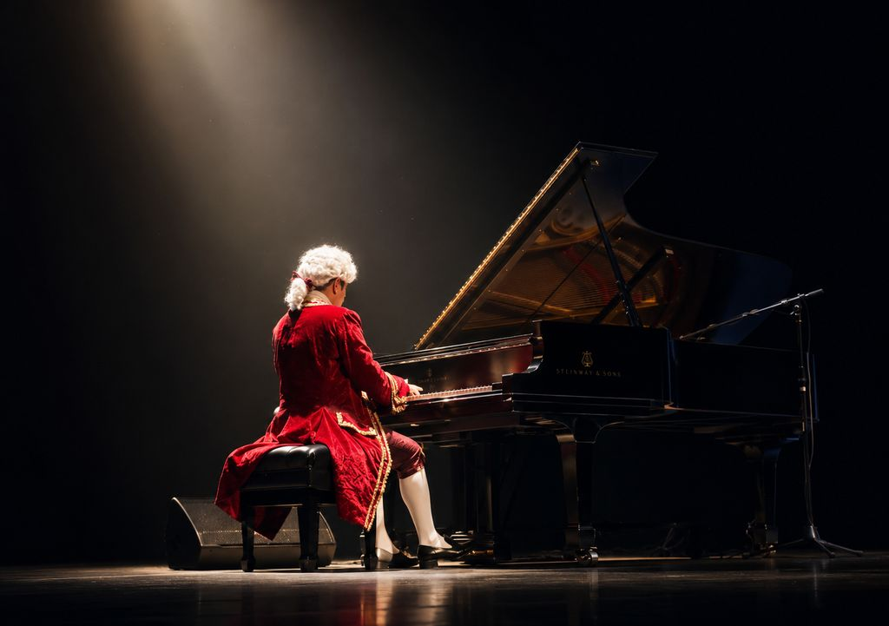

Un mundo de AGS
Construida para entenderse
dentro de cien años.
Historia, gobernanza, estándar, liderazgo.
Institución
Una filosofía sin mecanismo no sobrevive al crecimiento.
Esta página es el mecanismo. Existe para que dentro de cincuenta años, con cientos de personas trabajando dentro de este universo, siga habiendo una forma clara de decidir qué pertenece a AGS y qué no.
Lo que vive aquí
Historia
De dónde viene la práctica, antes de que existiera la institución.
Gobernanza
Quién puede aprobar qué, y con qué evidencia.
El estándar
Ocho dimensiones con las que se mide cada obra.
Liderazgo
Quién responde por la ley.
Prensa
Respuestas, antes que un dosier.
Trabajar aquí
Los puestos abiertos aparecen aquí cuando existen.
Socios
Coproducción, distribución, edición, instituciones.
El estándar
La excelencia es una forma de respeto.
Por el tiempo de quien nos elige, por la inteligencia de los niños, por los artistas que hacen la obra, y por las personas cuyas vidas reales contamos.
Guion
Cada escena cumple una función.
Personajes
Profundidad humana antes que diseño.
Dirección de arte
Cada color ayuda a contar la historia, o se va.
Animación
El movimiento comunica verdad, no espectáculo.
Música
La música cuenta la historia.
Investigación
Los hechos fundamentales, respetados sin excepción.
Experiencia educativa
Despierta preguntas, nunca obligación.
Producción
Respeto por el trabajo colectivo, también en los contratos.
Un solo «no» significa que la obra no está terminada. No significa que esté rechazada.
Gobernanza
Quién aprueba
Nada entra en producción sin pasar la revisión. La responsabilidad final es de la dirección creativa — no de un comité, y no del consenso comercial.
Casos difíciles
Cuando el legado de una figura histórica incluye daño documentado, incorporarla exige una revisión explícita y documentada antes de producción. Nunca un solo guionista, nunca bajo presión de calendario.
Lo que no puede cambiar
La ley del descubrimiento compartido, y las leyes creativas que se derivan de ella.
Lo que sí puede
Los estándares y los criterios operativos, con una sola prueba: ¿este cambio fortalece la ley, o solo la hace más cómoda de cumplir?
La diversidad, como requisito
Aplicada cuando se eligen los personajes, nunca como corrección posterior.
Sucesión
El documento está escrito para que lo apliquen personas que nunca conocieron a su autor.
Nombre comercial
AGS
Constitución
Trece capítulos, cerrados
Público
Niños de seis a diez años, y los adultos que los acompañan
En manos de
La dirección creativa, responsable de la ley
Liderazgo

Axel García Stur
Fundador
Dos décadas tocando el piano delante de niños, en Europa y América Latina. Años dirigiendo conservatorios públicos donde otros aprenden a tocar. Creador del programa de conciertos escolares del que nació esta casa.
Trabajar con nosotros
Prensa
Arte de producción, el manifiesto y un resumen factual, a petición. Preferimos responder a una pregunta antes que enviar un dosier.
Trabajar aquí
La casa es deliberadamente pequeña. Los puestos abiertos se publicarán aquí cuando existan. Hasta entonces, cuéntenos en qué no estaría dispuesto a transigir.
Socios
Coproducción, distribución, edición, instituciones y escuelas. La casa trabaja desde París, en tres lenguas.

La regla que gobierna este mundo
¿Podría haber tomado esta decisión cualquier otro estudio del mundo?
Si la respuesta es sí, todavía no es una decisión AGS. Esa pregunta sobrevive a cualquier reorganización de esta casa, y es la que aplicamos igual a un guion, a un personaje, a un producto derivado y a una alianza.
En qué punto estamos
Antes de AGS
Historia verificada
Dos décadas tocando delante de niños, y años dirigiendo conservatorios públicos.
Salas de concierto, aulas e instituciones en Europa y América Latina.
El origen
Historia verificada
Un teatro, un piano y una pregunta.
Conciertos didácticos para niños que nunca habían entrado en una sala de conciertos. Desde 2014, en Argentina y México: más de 2.500 funciones, más de dos mil escuelas y más de un millón de espectadores, según la prensa.
Hoy
Presente
Una constitución creativa, un universo y la primera obra.
Trece capítulos, cerrados hasta terminar la primera obra.
Dentro de diez años
Horizonte
Una institución que trabaja con escuelas, ciudades y estudios en varias lenguas.
Enunciado como intención, no como pronóstico.
Dentro de cien años
Horizonte
Un método que ya no necesita a sus fundadores.
La única medida que esta casa acepta como definitiva.
Una invitación
Prensa, alianzas, y quienes sostendrán esto después de nosotros.